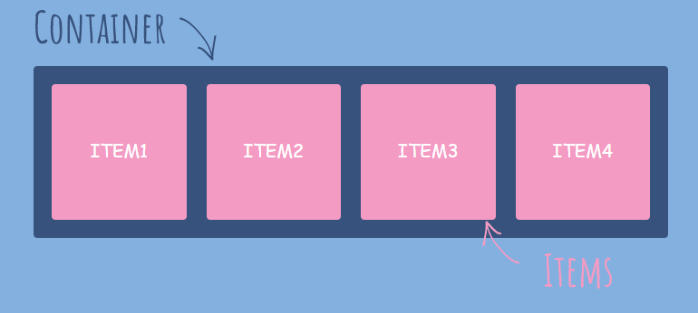

Formato Visual y Modelo de Caja
Formato visual
Inline
- a
- img
- span
- strong
- em
Block
- div
- p
- h1...h6
- ul y ol
- br y hr
- li
Inline-Block
Cuando usarlos y cuando no
El elemento aparece en línea pero se comporta como un elemento block. Un elemento inline-block resulta muy útil cuando queremos dar una anchura al elemento
Flex
Explicación
Flexbox tiene como meta ser una forma más eficiente de crear diseños, alinear y distribuir espacios entre ítems en un contenedor, incluso cuando las dimensiones de esos ítems son desconocidas y/o dinámicas (en virtud de eso el término "flex").
La herramienta Flexbox (de Flexible Box) fue creada para hacer estas tareas más sencillas y funcionales: los secundarios de un elemento con Flexbox se pueden posicionar en cualquier dirección y pueden tener dimensiones flexibles para adaptarse.
Características generales
Flexbox es un módulo completo y no una propiedad única; algunos de ellos deben declararse en el contenedor (el elemento principal, que llamamos de flex container), mientras que otros deben declararse en los elementos secundarios (el flex ítems). Si el diseño "estándar" se basa en las direcciones block e inline, el diseño Flex se basa en direcciones de "flex flow"
Modelo de Caja (Box Model)
El 'Box Model' o modelo de caja, dicta cómo se posicionan o se ven los elementos y cómo interactúan con los otros entre ellos.
- Este modelo dice que todos los elementos en una página se consideran un rectángulo compuesto por el contenido del elemento, el 'padding', el borde y el margen.
- El padding, el borde y el margen son propiedades de CSS, opcionales y su default es 0, pero las hojas de estilo de los browsers definen sus propios valores en varios elementos.
El modelo de cajas está compuesto por las siguientes partes:
- Contenido (content): se trata del contenido HTML del elemento (las palabras de un párrafo, una imagen, el texto de una lista de elementos, etc.)
- Relleno (padding): espacio libre opcional existente entre el contenido y el borde.
- Borde (border): línea que encierra completamente el contenido y su relleno.
- Imagen de fondo (background image): imagen que se muestra por detrás del contenido y el espacio de relleno.
- Color de fondo (background color): color que se muestra por detrás del contenido y el espacio de relleno.
- Margen (margin): separación opcional existente entre la caja y el resto de cajas adyacentes.

Padding
Padding es el área alrededor del contenido.
- Al agregar un 'Background-image' al elemento, esta imagen va a ocupar el espacio del contenido + padding.
- Padding normalmente se usa para crear un canal o espaciado entre el contenido y el límite del elemento
Border
El borde aplica una línea afuera del area del padding.
Margin
El margin es el espacio que va a existir entre un elemento y otro.
- Se puede decir que el margin es el espacio que está fuera del borde.
- Un error común es tratar de acomodar elementos usando el margin en lugar del posicionamiento (que se verá más adelante)